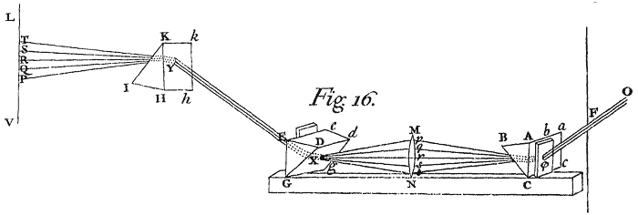
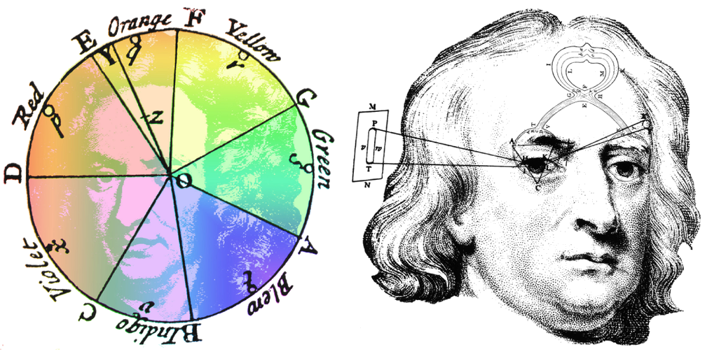

light
rays
colours
red
glass
prism
colour
blue
refraction
white
paper
water
parts
bodies
distance
yellow
air
reflected
rings
little
green
refracted
second
appear
violet
equal
image
eye
refrangible
like
reflexion
let
inch
glasses
angle
incidence
shall
make
greater
lens
side
body
hole
motion
proportion
sides
particles
order
surface
middle
making
refractions
parallel
refracting
dark
ray
experiment
inches
lines
manner
object
half
medium
fall
spectrum
great
black
degrees
sun
greek
beam
diameter
gutenberg
placed
thickness
Newton's Prism Experiment

Ligature Use Across Opticks
Newton's Color Wheel
